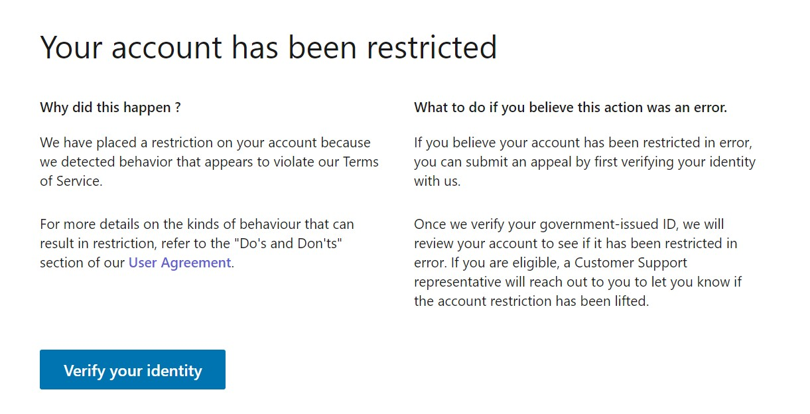

AI时代的糟糕大批判！！！¶
当火箭飞速前进的时候里面的燃料是与火箭一同飞行的，燃料们以为自己搭上了火箭的便车，殊不知燃料始终是燃料（燃尽然后被随意遗弃），不是乘客 1
人工智能，能治工人！10
代码越多，码农越困难，这是劳动产品对劳动者的异化。11
我们确定是AI这趟列车的乘客吗，而不是燃料吗？
哲学声明¶
声明以下皆为本质论的观点，当我言说，变化已然发生，我所言说的就算曾经是现在也不一定是。还是需要不断在变化中澄明现实，即不断从实存论经过感知现象、通过艺术描述现象。178盲目相信观点，就陷入僵化的教条主义。
区分字面、含义、感知、现象、现实，才能探求真相，分辨谎言。“是”之所以“是”不是因为字面的“是”，而是由于实际的“是”（也非感知“是”）的。我们有限把握“是”的天生手段是生理感知现象（看的视觉、闻的嗅觉、触的感觉），后发掘出人工手段，一种是通过艺术性描述映射现象，再上升综合为语言表达（说语音与写字面），再生理感知现象（听），再逻辑推理（凭借过去感知反映射出含义）得到新感知；另一种是通过印刷、录制、摄影、电子技术215来记录现象，（通过电报、广播、天线、网络、移动网传播，）再通过生理感知这种人为定格的现象（目前只有看、听两种感知）。真相是通过媒介直接推演出现实的理想化情况。真理属于真相的一种，真理是语言直接逻辑推理出现实的理想化情况，而实际上，语言可能误表感知、感知可能忽略现象、现象可能片面现实。
技术似乎不再是不分善恶的工具，它好像有着自我的逻辑反过来去控制人。
不回避真正的悲哀¶
每个社会的发展，靠的是整个社会基本共识的整体进步，而不是一部分人将另一部分嘴捂住，粉饰出来的进步。28
什么是消极。是一杯水剩下半杯多觉得自己可能会渴死。
什么是事实。是杯子里没有水，你觉得你会渴死。
什么是洗脑。是你的杯子里明明没有水，但有人拍拍你的肩膀，指一指守着水桶的人，说你不会渴死的，你也觉得自己真的会像人家一样不会渴死。
什么是悲哀。是舞台后的你要渴死了，有人在舞台前汇报演出，却演一个有水可喝的人，台下掌声雷动，人民不缺水了，拉下大幕，别人把你的尸体踢到一边。17
有些人是因为对人工智能的原理不理解而导致恐惧，有些人是为了个人名望而宣扬人工智能威胁论，有些人则是为了商业的利益推动人工智能威胁论。 –Facebook人工智能实验室负责人Yann LeCun184
是，我不否认这个观点。但同样有些人正是因为对人工智能的原理的理解而导致恐惧，有些人是为了个人名望而宣扬人工智能无威胁论，有些人则是为了商业的利益推动人工智能无威胁论。真正的关键绝不在于目的或立场，而在观点是否有理有据可信。
基本概念 87¶
国家政体¶
政体有好几种，主流的分类方法大致如下：
君主政体：主要权力掌握在一个人手中
贵族政体：主要权力掌握在少数人手中
共和政体：主要权力掌握在多数人手中
《恩格斯谈家庭、私有制与国家起源》200
思想意识形态：¶
国家与意识形态并不绑定，一个国家里有各个意识形态，主要看那种意识形态主导。
资本主义（Capitalism）是资本属于个人所拥有的经济制度，是以私有制为基础。资本主义分配下，脑力无产者虽然吃得住得比体力无产者更好一点，但是也还是给人打工的，只有辛勤劳动才能过生活，资产者则不同，他们靠资产性收入就能过上神仙一般的生活。165
法西斯主义（Fascism）是垄断资本主义国家内部矛盾尖锐对立情况下出现的一种社会制度，是资本主义国家对风起云涌的共产主义运动的应激反应的结果。为了镇压工人运动，统治阶级扶植一小撮无视法律的打手（墨索里尼、希特勒、日本军阀）上台，对整个国家实行高压特务（盖世太保、特高课）统治。125
社会主义（socialism）是一种社会学思想，诞生于16世纪初，主张整个社会应作为整体，由社会拥有和控制产品、资本、土地、资产等，其管理和分配基于公众利益。 马克思和恩格斯对社会主义提出了他们的理论体系，亦认为社会主义社会是资本主义社会向共产主义社会过渡的社会形态。
共产主义（Communism）是一种政治观点和思想体系，发源地为德国，现今的共产主义奉马克思、恩格斯思想为基本思想。共产主义主张消灭生产资料私有制，并建立一个没有阶级制度、没有剥削、没有压迫，实现人类自我解放的社会，也是社会化集体大生产的社会，面对恶势力也会团结一致。
自由主义：https://www.marxists.org/chinese/ellen-wood/1986/10.htm（弱者是否能够拥有自由）；更多主义查询：https://plato.stanford.edu/
私有制与公有制¶
相比私有制，公有制的概念则不太容易说清楚（注意：并不是无法说清楚，只是不太容易）。因为公有制作为私有制的对立面，起初并不实际存在，它最初只是马克思的一种理论设想。马克思认为，这是一种比私有制更高级的经济制度，这种制度一方面保留了劳动者的协作，另一方面又消除了剥削关系。但公有制具体怎么从一种设想变为现实生活中的实际事物，在马克思活着的时候，基本没有得到实践。
苏联建立后，苏联人把公有制从单纯的设想变成了活生生的现实事物。在苏联人看来，公有制经济就是国有经济（国家所有的自然资源、土地、国有企业、国有事业单位）和集体经济（集体所有的自然资源、土地、集体农庄、集体企业、集体事业单位）。苏联人之所以把这两种经济叫做公有制经济，是因为在这两种经济中，国家和集体已经把私人的生产资料所有权全部夺走了。在苏联最兴盛最强大的时候，人们普遍认为，苏联人规定的公有制就是标准的公有制。223
私有制¶
个体户。比如你在城市街头经常看到的个体户早餐摊位，摊位上所有用来制作早餐的食材和工具都是这个个体户私人所有的生产资料。这种私有制中，没有老板和打工仔的角色之分（故没有剥削关系），也基本不存在协作；
以雇佣劳动为基础的私有制。这种私有制更常见，比如你在市场上随便找一家公司，只要这家公司有老板和打工仔之分（有剥削关系），就是这种私有制了。之所以有人是老板，有人是打工仔，关键就在于这家公司的生产资料的所有权属于老板，而打工仔只有使用生产资料的权利。这一点老板和打工仔都是心知肚明的。至于公司老板究竟是一个人还是一群人，不影响这种私有制的性质。这种私有制中，打工仔内部存在协作关系，而且这种协作关系一般随着公司规模的增大而越发复杂化、精细化。因此，这种私有制的生产效率要远高于单打独斗的个体户。
最根本的矛盾——生产资料私人占有制和社会化大生产之间的矛盾。226
潜在问题：
在市场竞争中的失败者因为没有现金回流，只能贩卖生产资料来进行生存，生产资料卖完了就导致了无产者的扩大。168
因为私有制，资本和土地被少数人所掌握，而剩下的并不掌握生产资料的广大工人只能靠出卖自己的劳动力为生。而无产者由于避免失业而用拼命干来表现反而伤害身体。因为干完活就失业了，所以磨洋工，工人与资本家是敌对的。228
由于穷人卖不起而减产，甚至停产，砸毁机器，破坏了生产力。
为了获得垄断利润，还要封锁先进技术，使先进技术不能被推广应用。科技人员都是给他干活的，科技人员研究的成果会被资本家占为己有。无法形成人类的凝聚力。
而且资本家为了在竞争中不失败，还会互相阻挠破坏。这都要阻碍和破坏社会或者国家的发展。
剥削¶
从概念上说，当劳动报酬小于他们的劳动贡献，就产生了剥削；剥削是对他人生产要素的贡献无偿占有。私有制经济中并非一定存在剥削，而公有制经济中未必就没有剥削。我们不能笼统地把私人业主等同于剥削者——只有当私营业主付给工人的工资低于其边际产品收益时，我们才能把私营业主界定为剥削者;我们也不能断言公有制企业中的劳动者就一定不受剥削，除非他们的劳动报酬等于他们的劳动贡献。190
我发现，问题在于，不论私有制还是公有制，由于效率要求每个人会社会分工，每个人的劳动贡献往往是只有几个方面，不可能覆盖所有。在市场经济的思路下，需要将贡献换成通用的劳动报酬——金钱，在这时候是很难控制这种兑换关系的稳定，越需要对方的一方往往在这种兑换关系处于下风，由于钱的通用性，使得其往往更被需要，导致了卖一方的弱势地位。如果用控制价格的思路，只能导致交换停滞，那该如何解决？
人民生活依赖度越高的产业，越不能市场化，因为市场是会波动的，波动是会害死人的。
陈平老X在美国德州的房子，因为暴雪断电了，过了超过2天才通电，这在中国是难以想象的。因为很多人依靠电力生存，这么长时间不通电，真的会死人。所以陈平老X借此鼓吹中国，其实不如说一说私有化的危害。233
私有制、私有财产是人类贪腐、以权谋私、敛财、窃国的起源么？ - 刘镇锐的回答 - 知乎 https://www.zhihu.com/question/63071639/answer/208034800
资本主义¶
资本主义 61喜爱强调自由，而对于一无所有的无力应对机器的劳动者而言，这意味着“自由”的接受了征服者与资本的支配20
所谓自由或者规矩，只是对资本有利就是自由或者规矩，对资本不利就修改规则让你自由。74
福柯指出，资本主义社会在保障安定的秩序之下，人们“不是自然状态，而是一部机器中精心附设的齿轮，不是原始的社会契约，而是不断的强制，不是基本的权利，而是不断改进的训练方式，不是普遍意志，而是自动的驯顺”。也就是说，权力对人的生命进行调控，使得肉体本身成为权力规训的靶子。95
社会资源的不平等分配呈现加剧的势头，起点高，勤奋的精英比比皆是，并且还会互相帮助，顶尖资源和顶尖资源相配合，使得这种资源配置变得更加高效，在扩大差距的同时提升总量，“资源生资源”，越来越多的交际（人脉资源）变成了相似资源水平的人进行“等价交换”，好感，人情，及时的有效信息都和资本挂了钩。107
资本、资本家、走狗们¶
什么是资本¶
资本主义是资本洗脑术的孕育温床，比如将一个经济组织所创造的成就和价值体量，全部归功于一个人的身上，让这个人成为资本代理人，形成具有聚众效应、又极度神化的崇拜效果。66
因为资本如果不能继续保持增值，它就会被更能增殖的资本淘汰、吞噬88
谁是资本家¶
资本家何以成为资本家？是马克思说因为他占有生产资料。更可怕的是，占有钱这种交易资料。让除了你给他打工，你就没有钱，没有别的选择。187
所谓“资本家是资本人格化的体现”指的是，作为资本家，只要你处在这个位置上的时候，你的行为模式会完全按照资本的积累需要而进行。也就是说，一旦有了这么一种身份之后，资本家一定程度上是失去了选择的自由的。他只有近可能把公司越做越大，净利润越来越高，而不会想着去减少自己的所得而回馈劳工的。90 贪欲，是成为资本家入门条件91
资本论里写雇工到了8个就不是普通的个体经济，而是资本主义经济是剥削。139问题在于规模化生产的高效要求了大规模雇佣，剥削的本质怕是不在雇佣数而在于劳动力与利润间的分配！139
西方国家曾经提出过“人民资本主义”的概念，试图把剥削劳动人民的资本主义制度和劳动人民杂糅在一起，仿佛在资本主义面前冠以人民两个字，资本主义制度就成了“为人民服务”的制度了。他们这么做的目的，是为了混淆劳动人民的视听。前段时间观察者网提出了“人民富豪”这个概念，这和“人民资本主义”如出一辙。只不过西方国家敢于承认自己是资本主义，而观察者网不敢承认这一点。相比西方的坦荡，观察者网更为卑劣。
“人民富豪”也罢，“爱国企业家”也罢，即使再创立一个新词“人民赌王”，也并不能改变其吃人的本质。披上羊皮的狼还是狼，而且是更伪善更凶恶的狼。141
当劳动人民用“资本家”这个概念去称呼所谓的“企业家”时，这表明劳动人民透过现象抓住了本质；当“资本家”要求全社会用“企业家”这个概念来称呼自己的时候，这表明他们试图诱导劳动人民远离本质而停留在现象层面的认识上。120
资本家的走狗们¶
掩盖事实的最好办法不是一味掩盖，而是真真假假、虚虚实实40、转移话题、转移矛盾43（5分钟、小费将老板与雇工的矛盾转移到消费者与雇工的矛盾、精神资本家的保护44、鼓吹小团体放进移民将矛盾转移成弱势群体和白人男性的矛盾102）、培养工贼（将做坏事的转移给别人如HR、出了事解雇管理层）45、培养中产阶级（高消费显示差异被所谓的奢侈品割韭菜、来削弱无产阶级力量、渴望稳定更好剥削；高薪抱怨996挑拨起阶级内部的矛盾）
资本家的乏走狗：想当资本家又当不上资本家的无产阶级，即资本家的乏走狗147。生着无产阶级的命，操着资本阶级的心。想要赶紧干一桶金，将来成为资本家剥削别人。192
精神小布尔乔亚（精神资本家）：很推崇一种“努力论”，实则是为大环境的不足辩护，他们总觉得，别人过不好是自己不努力。其实并不是小布尔乔亚，因为他们既不认同左派推崇的平等理念，很为老板着想，但也不推崇右派人士主张的法治，因为他们觉得你是底层被欺负活该。196喜欢用资本家给了我们工作和工资，来歌颂资本家。反驳：地主收走劳动者生产的粮食，再仅分给他们勉强饱腹的份额。精神地主：骂地主的人有本事不领地主家的粮食！203
中产阶级：中产阶级其实是伪有产阶级，利用金融手段让这个群体假性获得固定资产，然后再让他们成为资本的奴隶，而为了防止这个群体的可持续发展，利用高额遗产税高福利税收之类的进行控制，让中产阶级无法将这种假性资产变现，只能一代代的继续做资本的奴隶，并且以此来让他们被剥削的同时还成为资本主义剥削更底层无产者的帮凶。一群刚脱离现有阶层，甚至说还没有脱离现有阶层的人，迫不及待地要和原生的阶层划清界线。中产阶级总是喜欢通过一些诸如生活方式、品味等虚无缥缈的东西来和底层划出界限。195同时鼓吹不属于他们阶级的消费，如豪车奢侈品包包197，整一些高级趣味，以喝咖啡高雅，于是就非咖啡不饮，非高档咖啡不饮。220
职业经理人：职业经理人管理和经营资本家的企业，使得资本家成为纯粹的资本家，而职业经理人的本质也还是工人。150将自己与员工比喻为家人，用家族情感瓦解了员工的利己主义，更是用远大的报复和梦想的蓝图，感化了员工思想，加强了员工的主观动能性。222
某些HR。资本家肯定不喜欢女员工生孩子，我不但自己承诺五年内绝对不生，我还让其他女员工也承诺五年不生；240
奋斗逼：“舍弃人性”来不断给自己的加班冠以奋斗向上的正能量，舍弃健康与家庭，并由于扰乱了就业市场的正常价格，带动内卷。按照劳动法规定，工作日加班工资是平时的1.5倍，双休日2倍，法定假日3倍，因此如果你的工作时长为996，员工只有拿到市场工资的2.275倍，在经济帐上才不吃亏。188
自以为没有被剥削的高阶工人：有些高阶打工人被高工资所迷惑189，就误以为没有被剥削。事实上剥削率高的人也许生活水平更高一些。比如你是专科生，一个月送快递创造的财富只有三万元，你的工资一个月五千，你的剩余价值率就是百分之六百，如果你是一个博士生，你的工作是给某机构研究所研发坦克，外包一次可以创造五千万的交易额与利润，但是你的工资只有一年一百多万。你要是无产阶级博士你肯定还觉得多棒的岗位啊。其实你的剩余价值率已经达到百分之五千了。186
一些“市场”经济学家：吴晓波白岩松嘴里的人口红利，如果站在资本的立场，你该为它欢呼，因为在资本眼里，人只不过是“人力资源”。170 人口是过剩、可死死剥削的人口，红利是资本的红利。171；向人才红利期转型172，又是「工程师红利」173
某些无良宣传媒体：吹捧“人民富豪”、只宣扬“大慈善家”的伪善面目、来收钱洗白肮脏事迹(左手抢劫，右手捐款229)。以民族资本家等爱国主义的旗帜来掩饰剥削。聪明的某老板：开始把自己的钱分出一部分投入到某社会性建设，他还是最富的，其他人拿了钱也对他造成不了威胁，反倒因为他给了钱，也对他毕恭毕敬起来，不再生事端，成就了美名。216职位取消大小周：先用违法手段完成原始积累，再带头政治正确确保垄断地位。219
某些无良市场营销：虚假宣传来抬高所谓价值，利用信息不对称收割傻子。
小粉红：某些企业利用爱国情节，天天鼓吹自主研发进行爱国主义道德绑架，小粉红来其为免费其造势宣传。180事实上，占据社会财富的富人并不爱国，富人有的选。穷人才是最爱国的，因为穷人没得选。坚持“某国人”这一身份恰是因为没有别的可以依靠。205动不动骂别人精美，是收了美国的钱206
某些学者公知：陈平的“2000人民币>3000美元”论来创造虚假的“民族自信”234，善于掩盖问题欺骗群众236，无视外国资本家的掠夺，粉饰国内老爷的分配不公。借着“国家”和“人民”的名义，误导“国家”和“人民”，颂扬进步，就是颂扬有权力者。237
免费广告：如为了蹭热度的鬼畜给别人做了免费宣传（蜜雪冰城209、金轮等）；美团骑手（是外包，无五险一金243，却穿美团的工作服给打免费广告）
沉默的大多数底层¶
工人为了就业不被因失业淘汰，而不得不进行超负荷劳动，劳动的报酬难以支付这种职业病的医药费，陷入了“不工作活不成，工作了活不长”的困局。168
目前我国人均国民收入超 1 万美元239，根据北京师范大学收入分配研究院课题组的调查数据显示：月收入不超过5000元的人口占比为94.87%。而5000元的月收入仅相当于年收入6万元，还不到1万美元的水平。238

Fig. 11 大多数家庭¶
在当下的互联网时代，小资和所谓的中产们可以尽情享用网络，在自己的阵地大声发声。可是真正的穷苦人，早就被排出在世界之外，无人为他们发声，更无人为他们书写。他们身上的保洁制服仿佛不是制服，而是一套机甲，穿上之后他们在大家的眼里就消失了，或者说他们变成了跟自动贩卖机样的机器人。201
资本家的千层套路¶
资本家与劳动者通过契约即劳动合同，将这种剥削关系未造成双方平等自愿的合作关系。实际上这种合作关系是建立在工人不占有生产资料这个前提条件上的，所以一开始就是不平等的，工人为了生存，只有受雇于哪个资本家的自由，而没有不受资本家雇佣的自由。150
旧资本家的千层套路124 、资本家以产业转移威胁劳动人民不能提高劳工待遇126、资本家的谎言领取一元钱的工资（不包含另外的获得资本增值部分的奖励）151。
讨论亏本问题时，把资本家当成了具体的单个的人，而非马克思口中的资本人格化的资本家，存在亏损的资本家，但不存在亏损的资产阶级。亏损的风险孕育在贩卖商品转化为金钱的过程，商品的货币价值贬值，而劳动价值不变？我认为，也不一定，有可能是资本家高估了劳动价值，而多付了工资，即劳动成本。价值去了哪里？视频说去了别的卖材料和买机器的资本家那里 150
市场经济的经济危机¶
而工业时代的市场经济，总不可能命令工厂生产什么、人民买什么吧，只能是什么东西赚钱，工厂闻风而动生产什么，结果动不动就产能过剩。
到那个时候，资本家有钱却不买东西，工人想买东西却没钱，而工厂的东西卖不出去导致破产，紧接着便是工人下岗市场瘫痪。54

{kind=link}
信息资本主义¶
以微电子、计算机、通讯、电视、广播、光电、纳米、生物和网络技术为标志的信 息技术革命，已经对当代资本主义的经济生活、政治生活 、文化生活和全部社会生活 以及相应的制 度都产生了深刻而重大的影响，社会整体被信息化、网络化、数字化。 6
而信息资本主义就是资本主义进入信息社会后的新社会形态。
信息资本主义体现了资本家对信息资本的不懈追求，信息资本家凭借其在信息资本上的优势地位和他们倡导制定的知识产权法保护下实施“合法”的信息垄断，以此来牟取比传统行业高许多倍的超额垄断利润。 2例如：腾讯的高阶垄断，阅文集团垄断版权，与实际作者几乎无关（小说本身著作权→小说衍生物→小说的改编著作权→改编电影电视剧）210。超70家影视单位视频平台联合艺人以保护版权为由，高举合法正确的旗号，背后都是垄断，排斥影视区自媒体。8 29 控诉9、网易云被腾讯的音乐版权壁垒打压27
信息资本主义的运行实质是资本家将“属于全人类的信息”、“属于个人的信息”、“信息处理途径”、“信息对智慧进化的影响”转化为资本，进而用这种资本将社会组织形式转变为对资本家有利的状态。
资本也可能会阻止了生产力发展48，因为为了个人的盈利，社会资源没有稀缺反要创造人为的稀缺。搞出垄断、饥饿营销等形式 146
学校商业化，知识商品化，这完全是苏修全面复辟资本主义给教育带来的必然结果。116
平台私人垄断¶
一个巨头崛起，千万个普通从业者倒下，街边的小店主，小工厂主，小作家纷纷破产。82
看似新公司雨后春笋般的出来，后面其实互联网的寡头打的垄断地位。现在的少数几家的互联网平台已经控制了大多数的衣食住行等基础生活设施，而文娱行业是意识形态的重要宣传口，如果被资本掌控，意味我们的思想场被轻易左右，从此将永远看不到威胁平台方利益的真相。
阿里腾讯旗下的很多服务早已超越了商业范畴，这些平台型巨头已经具有新型公众职能部门的属性，其产品和服务已经像政府公共服务一样不可或缺，缺了就可能对社会、经济系统的运行造成重大不利影响，这都是深度垄断的结果。213阿里主营金融、贸易、公共社交等领域；腾讯主营文娱、游戏、私密社交等领域。214
平台不平等协议¶
默许的“我已阅读并同意《用户协议》”36 手游厂商虚拟财产所有权归运营商所有。17年快手，用户在快手上传内容的知识产权都属于快手。原告方要花大量精力去论述用户协议是霸王条款不合理，才能使合同纠纷变为财产纠纷。虚拟财产争议75
平台禁言封杀¶
技术本来使我们拥有更多的自由，但这种自由又何其脆弱。虚假的言论自由：这就是中国–谈谈言论自由235，本视频弹幕功能已关闭。评论区已关闭。
新媒介与新技术的另一方面效果体现在人对社会文化、现实观念的转变上。按照鲍德里亚的阐述，我们正越发地生活在一个新的世界中，在这里，以信息复制和图像传播为基础的社会再生产秩序正逐渐代替以劳动力和物质生产为基础的旧工业秩序。图像和信息符号正在成为我们了解现实的主要来源。我们正生活在一个被复制和仿造了的世界中。我们无时无刻地被广告、影视、信息爆炸所笼罩着并置身于“超现实”之中（1975）。对真实的证明显得那么不可能，因为我们所掌握的一切都只是复制品而已。从这个角度来看，电影对于复制的概念有着广泛的理解和体现，小到对经典段落的模仿（或戏仿，以突出其互文性的消解意义），大到对整个影片的时代背景的旧貌还原与历史追溯，甚至是夸张地再现场景与话语环境……这一切都或多或少地引导我们对现实、历史以及自身认识层面的再生产的真实性抱着一种怀疑的心态。62
而现在这种现实的复制也被控制了。
个人经历：发了一条“好一个无法申诉”的知乎回答，被封7天。所谓平台的规则，解释权归平台所有的或甚至可以无视掉。使得表达受阻、获取真实信息的通道被限制
如何看待部分年轻人对B站《后浪》的消极态度?很多回答，评论区被官方关闭，无关闭理由，也没有收到任何通知。
“习近平告诉你，新时代应该这么干！”视频评论区已关闭60
而如果由于什么原因得罪平台而被平台封杀 3。其后果是极为可怕的。
GME散户被封杀74
阿里媒体帝国急剧扩张132：凭借庞大的用户资源，他们可以决定人们每天关注什么、不关注什么，思考什么、不思考什么，甚至如何思考等等。前者通过议程设置，制造热点或者“人工干预”热点的生成，后者则通过人工干预和大数据算法左右人们所接触的观点看法，并进而完成潜移默化的价值观塑造。
平台信息监视¶
获取手机的不必要的权限，通过信息，了解你的一切，控制着你的一切，从生活到想法。面对越来越无处不在的设备，我们不断有意或无意输入自己的信息，从生活习惯到作息时间；从你的爱好，到你的政治倾向。更直接的，有些互联网公司还会在招聘简历里要求填写中加很多不必要的私人信息。
知识的不对称由权力的不对称来维持。巨大的他者通过全球范围的基础设施，以无法察觉的自动化运作过程达成制度化，同时使得群众将这种运作视作社会参与的必需基础。这是诱惑用户加入这个提取数据的过程。这种社会依赖性是监控项目的核心。对高效生活的强烈需要消解了抵抗监视项目的倾向。这种冲突产生了一种心理麻木，使人们习惯于被追踪，解析，挖掘和修改——或者将它们置于合理化的状态中。7
然后反手又把用户的数据贩卖。13
用自然语言算法监控社交网络平台来跟踪市场74
平台利用大数据¶
平台留用大数据，而贡献大数据的是用户，是人民。–我说的，难道不是吗
大数据”来源于人们在以计算机为中介开展的行动中产生的小数据。对于数据收集来说，没有什么是微不足道的，例如，Facebook的“喜欢”选项，谷歌搜索，电子邮件，文本，照片，歌曲和视频，位置，通信模式，网络，购买，移动，每次点击，拼写错误的单词，页面视图等等。这些数据被获取，数据化，抽象，聚合，分析，打包，出售，进一步分析并再次出售。这些碎片化的数据流被技术专家称为“数据废气”。一旦将某些数据定义为废物，对此种数据的提取和货币化就不太可能受到公众的质疑。
谷歌成为最大和最成功的“大数据”公司，因为它拥有访问量最大的网站，因而拥有最大的数据废气。……他们选择了广告模式。这一模式依赖于对用户数据的获取，将其作为专有分析和算法生产的原材料，再通过谷歌精确的特有竞拍方式将处理后的数据卖给对应的广告商。随着谷歌收入的快速增长，他们推动了更加全面的数据收集。大数据分析的新科学在很大程度上受到谷歌的巨大推动。7
蚂蚁依靠海量数据，勾画精细的用户画像，了解还款能力，网贷坏账率低。又通过资产证券化，循环放贷的模式，加了高杠杆。26
尽可能利用收集到的用户数据保证广告商能够尽最大可能成功。
平台大数据杀熟:各个用户在同一平台的同一商品价格不同27
平台舆论控制¶
有 “信息富人”们通过这种信息的不对称而掌握了更多的权力，并利用对他们有利的信息来影响公众，操纵政治和决策。 6 例如：某大选 (美国选举的实质，诚如列宁批判美式民主所言，这是有钱人的游戏。需要广告，介绍你自己。而广告往往是资本家财团的钱。57这些钱用来，舆论洗脑、贿选、虚假宣传164)
历史：研究糖对心血管疾病的作用，资本家用钱买通科学家，从22个国家里人为剔除只剩下7个国家47
“马克思研究过当时发表的文章，得出结论的是，对穷人的小偷小摸、犯罪活动，不仅报道太多、而且有所夸大，白领犯罪、政治丑闻提的更少。”49
删帖、限流、压热度。52我们看不到失败人士，是因为失败人士被剥夺了话语权79
腾讯和谐了共青团的说说，秉持只要空间内容被大量举报，不管是不是恶意举报，总之先和谐掉145
只要媒体帝国推广轻轻松松浏览10w+。132阿里巴巴09年到15年不断收购各种媒体，尤其是各种纸媒倒闭期间，白菜价收拢了一大堆有输出能力的媒体人，最后大多数进入微博，控制舆论，形成了过于强大的喉舌体系。211

Fig. 13 阿里巴巴媒体帝国¶
更多见：https://ww3.sinaimg.cn/bmiddle/001QclxHly1gryyq5hpzbj60mi8wre8102.jpg
{kind=link}
要认真倾听群众、底层党员的声音，只有敌人希望我们不注意到现实，只有敌人会努力使人民自满而只看事物的光明面149
工人作息混乱¶
在资本家看来，工人的一分钟一秒钟，都是他口袋里的鈔票，因此他对工人的一分钟一秒钟也是不肯放过的。
996188（应付劳动法：允许探索适应新技术、新业态、新产业、新模式发展需要的特殊工时管理制度21；上午6-9点老板起不来管不到，下午6-9点、周六剥夺员工潜在的饭局公关商务的时间，阉割其商业属性，限制你安做打工人194）致猝死24、上厕所需计时12、新的8小时工作制（中、晚各一个半小时工资，回不去家，工资又跟绩效挂钩），得了一身慢性病20而老板不会心疼！
成百上干的“人民富豪”一起不死不休，带着成百上千万无产阶级互相杀伐
弹性工作？？？无非是让我在逼迫下承认我是自愿的。让子弹飞！
腾讯周三强制6点下班，正常状态成福利。151周三以外的工作日不晚于9点离开办公室
平台外包¶
以网约车为例，这种商业模式看似让消费者打车更方便了，但却让大量网约车司机成为没有任何社会保障的“零工”。网约车司机社会保障的缺失，最后要么他们自己承担，要么社会来承担。从这个角度讲，不要光看到网约车这个互联网商业模式带来的创新，更要看到它背后的社会溢出性成本。41
蚂蚁CTO鲁肃曾是支付宝外包的外包208
平台控制法律¶
腾讯“南山必胜客”打赢国家知识产权局。230
近三年在深圳中级法院，腾讯作为被告的案件，胜诉率100%：3年间，深圳中院判决涉及腾讯的案件108起，其中胜诉106起，败诉2起，腾讯胜诉率98.15%，腾讯作为原告胜诉率为81.8%，作为被告胜诉率为100%。
综上，腾讯在深圳的胜诉率为95.04%
平台奶嘴乐用户贩卖注意力¶
平台上，信息多要么是碎片化的，要么是娱乐化的。14《信息资本主义时代批判宣言》中说此种信息更有益于思想管理，生产下一代的知识劳工。19
PDD员工猝死和“拿命换钱”：
内容平台上，沉迷虚拟世界的人去供养那些分享享受优渥和新奇生活（打电竞、玩极限运动、汉服cos）（什么是后浪，前浪的儿子和女儿！18）或是打色情擦边球（宅舞区）的人16。大数据推荐系统保证了沉迷。

Fig. 14 一个RED摄像头¶
内容平台以点击率、曝光率、流量为先，如B站，近期充满了消费主义和资本主义的批判，不料成为了文化工业、消费主义、资本主义的一部分37
我们管理自己的生活建立在获得的完美感上因为爱心、点赞、竖起大拇指这些短期的信号107
平台超卖商品¶
某些限量商品它商家可能只有500个货，但是拼多多在卖的时候却可能卖出1000份，多出来的500份拼多多会在付款之后直接强制取消订单，并说是因为账号不满足购买条件(重复购买之类)，但真相确是拼多多为了营销限量商品在拼多多平台非常容易购买到的假象，进行了超卖。22评论区——奶贝加晚了
平台刷单刷粉¶
为了能够尽快拿到风投，都在拼命的去刷单，为了就是营造一种市场占有率很大的气氛，这种情形让“创新”成为创业的次要因素，已经阻碍了中国企业的顺利成长。
而这背后其实是资本的疯狂追逐。作为中国最被看好的新兴产业，互联网已经陷入了“刷单———更好看的数据———更高的估值——— 刺激刷单”的恶性循环当中，这样就让新的平台无法成长，企图自己独揽市场，非常不利于创新。120
平台随意封号¶
QQ号码是腾讯按照本规则授权注册用户用于登录、使用腾讯的软件或服务的数宇标识，其所有权属于腾讯。218
微信成了互联网时代的基础设施，涵盖工作社交、政事服务、健康码、etc、水电费。而掌握微信的是资本驱动的对股东负责的商业公司。社交与支付绑定的问题是，如果聊天存在问题，就把支付系统也一起禁用。微信随意被封，无法查询到具体原因，朋友失联，资金冻结，使用微信登录的相关网页也无法登录。而申诉渠道全是 机器人回答143，人工客服少之又少77，在公众号里用人工服务召唤不出来，必须用“跳楼、不活了”才能召唤出来144，例如：qq被紧急冻结15天，人脸识别失败，发泄自己的不满找人工客服242
微信承担了太多职能：155
朋友圈 （facebook）
支付设备 （venmo，paypal，apple pay）
新闻中心 （news app，facebook）
商务名片 （linkedin）
办公通讯设施 （slack）
 
平台疯狂扩张¶
以互联网+、信息化的口号，来干社区团购卖菜，抢走最没文化的劳动人民的钱。
大佬操纵市场¶
马斯克凭借推特言论，操纵狗狗币、比特币的价格，涨跌波动巨大23
辟谣消息不实，游族董事长“住院恢复治疗，各项体征稳定”，结果没几天人没了。当天公司的人股票就抛了。
阿里上市正面消息拉升股价卖股份，负面消息拉低股价退市回购73
Robinhood只准卖不准买GME股票74拔网线、删代码、禁止交易75
律师函警告¶
造谣别人造谣，诽谤别人诽谤，很难追究行政、刑事责任。诽谤的主体却不能是公司。PDD猝死由于竞业协议，一直是以供应商的身份参与公告，去外包公司。固化证据要坏，不能给人家撒谎的机会。24
对个人动不动几千万的索赔，律师应诉费，按照索赔的金额比例来。
买版面，来掩盖真实的恶心信息。
开源？还是剥削？¶
各大厂开源背后暗藏对制定规则（起先的一套开源代码有极大的学习成本）的野心，把竞品扼杀在摇篮中。25而对于之后的开源开发者，却沦为廉价的甚至是免费的（将用户转变为免费的劳动力可是互联网行业的一大创举啊，我就是免费地成为了《动手学深度学习》的开发者）、随时可以替换的劳动力（大厂的稳定恰恰来源于码农的可替代性58；更方便在寒冬时，平台大肆裁员122，例如Amazon
AI
裁员181、LinkedIn、Microsoft大裁员！182、商汤让mmlab的实习生集体离职209）和大厂所谓打着合作的旗号180、“拥抱自由开源”的宣传拉声望的工具人。自此，大厂聪明地把核心控制在自己手中，而把高风险少收益的旁支末节的开发工作交给开源。47
原AWS AI现FB的张航主张代码开源，说为了行业的发展。但我却提出，这只有助于大公司的发展。小厂或个体研究者在数据不多算力不强的情况，公开算法被其他大厂医用，就毫无竞争力可言。一边要求小厂或个体研究者分享，自己又守着核心数据、大量算力的嘴脸真的是恶心。
云公司最爱搞AI比赛刷榜，前10名获得奖励，其他的陪着练蛊，还陪着给硬件厂、服务器滋滋滋送钱。55利用比较心理，排行榜上数据工人们不断地在辛勤劳作。159（刷榜-》宣传公司研究实力-》股价上去-》公司股票就更值钱了176）
重点骂AWS：简单易执行的实用主义，简单有效的leadership principle洗脑，对优秀员工合理的压榨和近乎变态的节俭，搭开源软件的便车，自己不创新直接把别人的东西搬过做成IaaS造就了AWS巨大的成功。请上github看看Amazon开源了多少项目：30多个 – 不及Facebook十分之一，要是论影响力，比星星数量的话恐怕还不及Facebook千分之一，Facebook仅仅React一个影响了全世界，Google就更不用说了。185
剩余价值=劳动创造的价值-劳动报酬，工人所创造的价值并没有完全归工人所有，剩余价值被资本家无偿占有。150那开源工程师的价值也没有完全归其个人所有，而被能利用开源代码的资本家无偿占有。
旧时代的例子¶
Google要的是大家的浏览器都能流畅跑自己的应用，而不是大家都用自家的浏览器。但是，IE太强势，Firefox不够强势，Opera万年1％市场，市场需要一个更强势的力量来推动浏览器跑步向前。Chrome就是这股力量。但是，Google认 为只有Chrome不够，他们希望能有Chrome阵营。因为浏览器是众口难调的，总有不喜欢Chrome的人，而Google不可能一个个去满足，那么 最好的方法就是，提供一个Chromium，让其他公司制造自己的浏览器，把Chrome抢不到的那部分用户都占据掉。
打个比方。
Google是做物流的，他希望大家都能通过他运东西。但是，他发现一个问题，很多人家里到他公司的路不通——要么不好走，要么不够宽，大家就不爱用Google。
Google于是想出了一个办法——给买家修路。他不光自己修，而且还提供工具让别人修。别人可以免费拿他的工具来修路。到后来，很多地方都用上了Google的修路工具，修出来的路都是Google标准，Google自家的大货车可以跑的飞快，而他支出的仅仅是工具钱。
Chromium就是那个修路的工具，做出来的各种浏览器就是修好的路，通过这些浏览器，用户可以用更好更快的网上体验，或者说使用Google产品的体验。Google Map、Google Earth、GMail、Driver……这些Google服务都是很依赖高性能浏览器的，你根本无法想象在IE6上用这些网站体验有多烂。
因为Google的努力，现在Chromium系遍地开花，而且其他浏览器也因为Chrome的压力而加快了进化的脚步。现在条条大路通Google，Google的目的已经达成了。56
控制论资本主义（赛博朋克）¶
齐瑟默尔：我认为马克思的全部理论都基于一个思维错误。他认为劳动是价值的唯一源泉，忽略了资本主义不只是通过剥削工人，而是通过不断的技术进步在发展。50而这种技术的价值终有一天不再取代了人民的劳动价值，其来源却属于人民，可最后会归于谁？只能希望还是全体人民吧。
「过度资本深化」：由于使用资本的成本（如超低的利率和政策支持）比雇佣人力要低，过度鼓励了资本的入场，使得明明有13亿人口，中国互联网行业却比欧洲和日本更热衷研究如何无人化。152
亚马逊被曝光构建了一套AI系统，可以追踪每一名物流仓储部门员工的工作效率，统计每一名员工的「摸鱼」时间（Time Off Task，简称TOT），然后自动生成解雇指令。 曾经亚马逊用AI来决定招人与否，最终因为反对的声浪而废止。好，现在亚马逊改了一个方法，用AI来决定该不该解雇一名员工。 亚马逊现在用机器判定：你，是不是贝索斯的兄弟？ The Verge最近拿到了一份文件，里面有几十页、900多员工，被AI监工解雇，理由都是「工作效率太低」。 实际的数量可能更多，一个2，500人的仓库一年就解雇了300人，裁员比例超过10%，而亚马逊在全美有75个这样的仓库。183
赛博朋克时代，底层劳动力由于被机器高效率而替代，而显得毫无剥削价值，而被时代淘汰只能以或卖身或抢劫来维持生活，而精英又高度依赖大公司垄断的算力、数据，脱离则毫无价值，被束缚在大公司中，焦虑地缩短机器能替代他们的死期到来。4
从阶级结构的角度，人工智能一定会带来更大规模的垄断集中。166
“无产阶级的末日”论的常见反驳：可又由于商品的交换理论和相应过剩，大部份人无收入或少收入必然导致无法消费起大量生产的商品，引发商品的相对过剩即产能过剩，资本主义的基本矛盾（生产社会化与资本主义生产资料私有制之间的矛盾）将全面爆发，将产生系统性的经济危机，并且危机无法根除，必然产生新的生产关系。
我必须说这种反驳是盲目自信的，用“必然产生”就一转绝望的困境。相反，我们需要怀有这样的信念：这种产生若真的侥幸发生，也必然饱含痛苦血泪的斗争。
对于未来可能到来的《北京折叠》世界，一切觉悟的无产者和追求进步的人士都应该为社会主义奋斗，犬儒和逃避无济于事，因为这是一场决定所有人命运的战斗，人们无处可逃。165
之前的剥削是对十个产业工人的剥削。赚取剩余价值。换了机器人之后是对机器人工程师的剥削。并且这种剥削非常严重。机器人本身是工程师劳动在时间和空间上的延伸。使得这种剥削也在时间上空间上被延伸。
社会主义¶
希望占有资源和支配他人的欲望产生了私有制和资本主义，希望受到他人善意和认同的欲望产生了新式宗教，希望探索新的环境、学到新的知识的欲望促进了人类的智慧进化和文明发展。作为资本主义的对立思想，社会主义以第二种欲望中对人与人之间善意的期盼和第三种欲望中对全人类普遍进步的追求为基础产生。 5欧美学术圈不给马派经费，企图压制马克思思想。这透露的恰是一种凭借占有金钱支配他人筛选出自己想要的未来的思维方式。193
社会主义的本质，是解放生产力，发展生产力，消灭剥削，消除两极分化，最终达到共同富裕。63
培养社会主义青年，决不是向他们灌输关于道德的各种美丽动听的言词和准则。我们要培养的并不是这些。当人们看到他们的父母在地主和资本家的压迫下怎样生活的时候，当他们自己分担那些开始同剥削者作斗争的人们所受的痛苦的时候，当他们看到为了继续这一斗争以保卫已经取得的成果，付出了多大的牺牲，看到地主和资本家是多么疯狂的敌人的时候，他们就在这种环境中培养成为社会主义者。为巩固和完成社会主义事业而斗争，这就是社会主义道德的基础。这也就是社会主义培养、教育和训练的基础。这也就是对应该怎样学习社会主义的回答。177
三阶段¶
在科学社会主义（马克思主义以及其各流派）的生产方式理论中，它在发展上分三个阶段：153
初级阶段是一个社会由原始迈向封建，再迈向资本主义，之后该社会在阶级矛盾困境中觉醒开始社会主义，即没收私有生产资料为国有化并为公有制社会的起步铺垫基础；
中期阶段是公有制社会战胜私有制世界的阶段，由于体现生产按比例协调发展的优势，马克思称为社会主义优越性8，能够极大地吸引了私有制社会里的广大中下层人民，使社会主义能够在私有制世界的包围圈里得到蔓延与扩展从而不断突破、战胜后最终公有制世界完全代替私有制世界；
高级阶段是在社会主义更加稳定、科技更高的基础上开始步入社会主义高级阶段，生产方式理论的最后型态即迈入共产主义社会阶段，当公有制世界得到持续稳定的发展后，共产自由世界形成雏形，那时世界上已经不再有阶级、国家和政府，政府的职能几乎被下降到社会的各领域里。通常所说的共产主义理想指最后的高级阶段，也就是共产主义的自由世界。9
左与右？¶
警惕：把嘴里的左混淆成经济立场上的左派，尤其是打着共产主义旗号，实现类似封建君权主义的极权主义。101
|资本主义国家视角的各种主义|35 |社会主义国家视角的各种主义|35
↑右派:小政府+起点公平(?机会公平说)
↓老左派:大政府+结果公平。美国政府二战后麦卡锡主义：对于仅要求经济待遇的工会则施以仁政，尽量提高工人们的待遇。很多工人在得到福利后便不再参与左派活动。（被招安）
新左派（马尔库塞的理论）：说工人已经资产阶级化了，不能指望他们建立不同的社会。在新左派眼中，工人不仅不是潜在的盟友，反而是最强大又最不可救药的敌人。本质是富人的游戏，嬉皮士是他们最好的代言人。三大主要行动：主张参与式民主、为拒服兵役而反对越战。102 主张多元化被右派利用，引入移民，降低劳动力成本，转移产业。
极右民粹主义：大政府+维护精英阶层利益。无视国内贫富差距扩大、优先解决国际贫富差距小的威胁。说看重民生的时候，说经济自由；说经济开放时，反驳国家利益高于一切。
黑砖组织：帚望把富人拉下水，不做任何妥协。无视国际局势外在问题。呼唤什么都不管的小政府，又希望能在弱肉强食的市场秩序中，能达到均贫富。你跟他谈改革，他就骂你独裁要民主；你跟他谈改善民生他又骂你限制自由。99
信息社会主义¶
信息资本主义与信息社会主义的本质区别是什么?两者之间是否存在着趋同点的下行(经济形态和技术形态)和不同点的上行(上层建筑?)是否意味着国家之间社会形态的划 分在当代的重心从技术和经济层面转向了上层建筑，主要取决于执政党的性质和意识形态和社会 终极价值(追求目标的不同)
从信息资本主义国家的实践来看，信息化对于人们教育文化水平有较高的要求，而不具备中等甚至高等教育背景的人们往往由于不具备起码的工作能力而排斥在劳动市场之外，或者只能从事低收入的工作，因此，在信息化过程中往往会出现社会成员贫富分化加剧的现象，即所谓“数字鸿沟”，这也是资本主义的内在要求所使然 。那么社会主义由于追求的是共 同富裕，所以信息社会主义的目标理所当然是要消除这种贫富鸿沟，例如通过信息共享来达到这一目标，由此体现了信息社会主义和信息资本主义在上层建筑层次上的重要区别5
如果信息社会主义实现的话，那么它肯定已不是社会主义的初级阶段，因为无论从生产力水平还是人均的财富，都应该是比较发达和富足的水平，摆脱了社会主义初级阶段的基本贫穷和不发达状态，此时即使不是高级阶段，也至少是社会主义的“中级阶段”5
马克思主义的反思（完全自己写的，欢迎来辩）¶
无产阶级，对于生产资料的实际掌握并不能完全弥补弱势地位（也永远不可能完全最优的实际上掌握并能使用所有的生产资料，永远要参与非自产产品的分配），对于强大的资本阶级，无产阶级还弱势的是外部资本的输血（资本阶级远比无产阶级更团结）、产业链的全盘控制、营销时控制定价。
小布尔乔亚，爱用社会达尔文（维护统治的口吻96）说被淘汰，说马克思的都是仇富。具有两面性：妥协性软弱性。得势的时候个人奋斗，失势的时候外部压迫。85
如何破左派无能、右派无德？
我认为，真正的重要的区别不是谁掌握生产资料，而是谁在生产所需品，谁在掠夺生产成果去享受，谁生产所需品得多，谁享受得多（只讨论那些本可以生产而不是没有能力投入生产）？而不是一直搞个别人有钱后的斗争，毕竟储蓄的钱在消费前也没有任何使用价值。108 即只重视，享受阶级（本有能力，享受>生产所需品）、生产阶级（享受<生产所需品），无能阶级（无能力生产所需品）。
常见行为：¶
以下行为，只从生产、享用物质资源角度考虑：
生产行为，要么为了自我满足、要么为了交换到满足自己的需要的产品。
交换行为，为了交换到满足自己的需要的产品而物物交换。
售卖行为，自我满足后多余的产品，期望用于交换到资本（物钱交换），最后以期满足自己的需要的产品。
工资行为，劳动力的贩卖价，采用“差异工资制”加剧了工人之间的竞争，阻碍了美国工人团结和工人运动的发展。但是不管你多能干，效率多快。老板是不根据你的实际劳动产生的价值来给你工资的，他给你的工资是整个阶级工资的一般水平。123
购买行为，本质是选择自己不生产，花钱去利用（选择用资本去夺取）他人的成果。
搭便车（白嫖）行为，本质是选择自己不生产，不花钱去直接利用他人的成果。
真正的问题不在于行为如何，真正的问题是有的个体没法以满意的代价满足其需求，即人永远是目的，而非手段。
其他行为¶
其他的有可能的行为，产品、资源与人发生了千丝万缕的关系，人有时成了资源即劳动力或叫人力资源，成了产品即成奴隶、卖艺、卖血119、卖身：
抢劫行为，本质是选择用暴力去夺取他人的成果。
坑蒙拐骗行为，本质是利用信息不对等去夺取他人的成果。
自杀行为，本质是选择用暴力去剥夺自我享用成果的需求。
杀戮行为，本质是选择用暴力去夺取他人的成果，并剥夺他人此后享用成果的权力，但问题是也同时使得别人无法生产。
移民（主/被动）行为，本质是由于他国人民更容易奴役/管理、能实现更低成本去生产。
收税行为，本质是选择用法律权力（孕育在潜在的军事的暴力中）去夺取他人的成果。
财政分配行为，本质是为没能力或没职能去生产、购买的个体直接送他人的成果。
进出口行为，本质是选择自己不生产，花钱去利用（选择用资本去夺取）他国的成果。
储蓄行为，本质是此刻不能或不是最佳的花钱去利用（选择用资本去夺取）他人的成果的机会，存在银行的场所去积累钱的行为。
投资或借贷行为，本质是选择放弃此刻利用资本（此刻无法、不是最佳）去利用（选择用资本去夺取）他人的成果的机会，来换取有未来有更多资本（本金+利息或股息或其他）的机会。
投机行为，本质是选择放弃此刻利用资本（此刻无法、不是最佳）期望去更多博取他人下一刻放弃的资本。
营销行为，本质是扩大市场声音，以期加速卖生产成果。
传销行为，本质是 TODO：
学习行为，本质是选择试图领会他人的逻辑、行为，以谋求更好的生产、分配。
抄袭行为，本质是选择模仿去低成本复制他人的成果。34
奶嘴乐行为，本质是以他人排练出来的虚拟品经历（娱乐业、直播、VRARXR、短视频、游戏、黄120）、赌46、毒42，去发泄情感需求。而，由于互联网的传播免费与实业经济的萧条，丧失生产意志的底层人选择沉迷奶嘴乐，以期望弥补物质消费不足的痛苦，可又被商业广告这种贩卖注意力107的产品所恼。警惕这种成本看似廉价，实则无实际作用的自我催眠行为，占据了我们的时间241，分散了阶级巨大分化的注意力。204
产业转移行为，本质是由于他国能实现更低成本去生产。39
奴隶行为，本质是用奴隶制（个人暴力）去夺取他人的成果。104
剥削行为，本质是资本家仗着自己拥有生产资料而利用劳动者出卖劳动力，榨取工人身上的额外劳动104，以期望获取更多资本，以期望利用更多他人成果的行为。92
导师剥削行为，本质是导师拥有主导你研究所或你毕业的资格的权利，学生没有选择，利用学生出卖劳动力赚取经费。104
机器生产行为，本质是机器去执行生产行动。马克思说到：“对资本说来，只有在机器的价值和它所代替的劳动力的价值之间存在差额的情况下，机器才会被使用。”（P451）也就是说，机器在资本主义生产方式下的使用只能是生产剩余价值的手段。也正是因为这样，所以机器在资本主义制度下只能是剥削工人，使工人越来越贫困，这也正是对约翰·穆勒的疑问的回应。而对于共产主义社会而言，机器使用所产生的效果与其在资本主义社会的应用是完全不同的，正如在《资本论》（第一卷）中第451页末尾的一个注释中写到：“因此，在共产主义社会，机器的使用范围将和资产阶级社会完全不同。”94
AI时代的超高阶操作–（导师）剥削劳动力开发AI来生产行为，本质是利用你的青春劳动力换算成AI的永续自动劳动力，以期望获取更多资本，以期望利用更多他人或机器成果的行为。
价格的“应然”与实然¶
“应然”：马氏劳动价值论里，商品的价值是由于人的无差别劳动所致，“应该”按照社会必要劳动时间来“定价”30。必要一定是平均吗？对于研究、艺术创作而言，劳动时间是如此不可控、而且是复杂独特的，那又如何定价呢？而对于落后的技术产品而言，没必要交易了。而实际上这只是社会的劳动力时间成本104
实然：而实际上的商品交易时的价格常常是，先排除自我生产必要性，再以一种只考虑到消费、而对实际的生产过程中原材料、生产、运输、运营、销售知之甚少的视角，在了解的有限的他人现有成功或承诺成果的范围，最愿意承受的代价（不一定最低、不一定最满意、也不定有实际的使用价值，是完全的心理上认为的且实际能支付的），是一种单纯的以货币量化的结果。
归谬法：假想自动化已发展到顶点，所有的生产和服务都用不著人类劳动了。任何人都没有收入，但生产和服务却仍有价值。32我认为，归谬法只能证明自动化下价值的存在，而不能保证其值与社会必要劳动时间成比。比如，对于艺术等以审美主导作品，其中每个人的主观决定其价值。
警惕GDP(市场数字流量指标）论¶
中国看上去比美英富得多。这里的街道、机场、地铁、高铁、剧院、人行道、公园，令纽约或巴黎相形见绌。但中国还不算富，人均GDP仍较低，但这恰恰是“中国特色社会主义”如此了不起并优于西方资本主义的地方。中国不必达到人均收入约5万美元以上，才能实现繁荣、赋予国民更好的生活、保护好环境并促进伟大文化。70
警惕市场论：在内部的不进入市场的是不计入GDP范围里的，如果外包就会计入GDP里。228当经济发展的目标变为单一GDP的时候，国民健康、环境破坏等等就不被考虑的。232
警惕数字指标论：我们变得习惯用数字代替真正的体验，执迷于抽象数字的比较，没有意识到这些数字脱离了具体场景，已经过分简化了现实的丰富性。199
警惕流量论：175
举个例子，朋友保安，月薪3000，继承了家里深圳2套房，1套自己住，1套租出去获得3000一月收入，月总收入6000，一年有72000元这是他的GDP。而2套房共1200万，加上一共10000元存款，是他目前的存量经济1201万，可惜他是个月光族。
你很聪明，高级码农，月薪50000元，但是你没有存款也没有遗产更没有房，房子600万你要贷款，至少凑首付180万，你每个月只能花4000元多一些（3000元租朋友房子），一年攒下55万，差不多要3年多才能攒够。
而你的一年的GDP高达55万，是朋友7万2的7倍之多，而你的生活标准基本最低一级，月消费1000生活水准设为1，你朋友除掉1000，月生活有5000任意支配，可以说生活水准是你的10倍不止。
即便有了房子，在你把房贷还清，并攒钱买下一套房再租出去，这段存量经济从55万到1200万的时间，事实上要20年，但是很可惜，你这种工作所耗费的精力导致你收入会开始下降，并且至多工作25年，刚好在被辞退前达成这个目标。
也就是说，你用25年时间，存量经济达成1200万，并找了个比保安稍微好点的工作，月薪还有5000元，但是过了25年生活水准为1的日子。
你朋友，一开始就有1201万的存量经济，生活水准是你的十倍不止，25年后当上保安队长月薪也是5000元。
可是你的年GDP是他的7倍不止，生活水准是他的10分之一！
如果你朋友年GDP比你高1.5倍，一年85万，但是每年衰退的比较多，存量经济依旧有1200万，你白手起家，开始赚的多，后来变少，仅有的25年工作时间之后，是否能超越你的朋友？
第四产业¶
而在互联网等方式的信息产业(第四产业：对“克拉克大分类法”（第一产业：农业，第二产业：工业，第三产业：服务，除第一、二产业外的所有其他产业）的延伸，该产业是指对本身无明显利润但是可以提升其他产业利润的公共产业。也可以称之为知识产业，或者信息产业。第四产业中劳动对象由“物质资料”向“非物质资料”即“人本身”的转化，就成为人类第四次产业分工区别于前三次产业分工的一个本质特征。64)里
由于极低的边际传播成本，存在搭便车行为，这种搭便车极大地方便了抄袭方，反抑制了生产方的创新。
由于极低的边际传播成本，存在明星行为，赢家更容易通吃，企业要么垄断要么死，加剧了恶性竞争。所谓明星行为，是依托网络媒介，将自己的影响力延展开，不再限于某个小地方，上限拉高，成了网红，而由于规模效应，，边际成本基本为0；网络效应，扩大效用215，边际收益递增，形成规模经济111，收入过亿成为可能。由于互联网的传播快，可利用反馈效应改进产品，不过也导致头部网红也并不幸福，网络暴力、抑郁、焦虑常伴左右；而更多的是无人问津的小主播80。
由于极高的认知解码成本，存在信息不对称行为，导致了另一种知识或其他信息产品的私有制。也就导致了简单的一次性的开源，并不是共产主义而只是宣传的把戏，代码看起来为人民共同所有，实则由于陷入无知的盲目，而不能运用。
手段¶
道德经济¶
社交羞辱、背后说闲话、道德批判等，且在道德经济中假冒伪劣，版权抄袭往往是不能忍受的。而由于地理距离问题，这种手段不管用了。最后的是带有宗教性质的小型市场。而又由于互联网，使得社交羞辱变得便利，一键三连使得up主获得到道德经济的经济激励。匠人精神复辟99
新时代的例子–清华教授：「躺平是极不负责任的态度」100
计划经济（配给制、按需分配）¶
计划经济，顾名思义是有规划、计划发展经济。从而避免市场经济发展的盲目性、不确定性等问题，给社会经济发展造成的危害。如：重复建设、企业恶性竞争、工厂倒闭、工人失业、地域经济发展不平衡、产生社会经济危机等问题。109在计划经济下，投机倒把是违法行为。
二战期间英美老牌资本主义国家都放弃了市场经济，实施了严苛的配给制度。20世纪50年代，伴随着英国特拉法尔加广场集体焚烧″粮票“的活动，西方国家修复市场经济格局。
1984年国企上级假装给工人发工资，工人假装工作。139 集体演戏的背后是，生产力的实际落后导致只能生产不理想的产品、而包分配纵容了全社会去忍受这些不理想产品（计划指导下的统购统销维系了企业的永续，国企员工有铁饭碗工作）。140 依我看，其错误不在计划经济的错误，而在于单一、统一、过于迟缓的生产计划，包分配的死分配制度：单一计划、包分配防止了重复建设、恶性竞争但也阻止了生产的多样性竞争、统一防止了但也阻止了运用生产过程的突发的灵感、过于迟缓是由于层层统计计划的反应链路长导致了反馈不及时。这最后导致了竞争活力不足，实现不了优胜劣汰，而使得劣币淘汰良币、纵容了偷懒落后，这不一定非要寻求带有私有制色彩的市场经济才能引入竞争活力。
早期已有的红书计划202
我所想的解决方案：如果各单位分别制定各自计划、甚至允许有空计划（不规定成果、不限制手段、更加纵容高不确定性但具有长期价值的艺术、科研），而总计划局只在意整体不太过多重复建设，并在实践中，允许一些采用实验性不确定性、不同灵活性的方案，这种允许一定的冗余是为了更好的创新，引入优胜劣汰的竞争机制（不纯粹金钱导向，也考虑社会），整体生产成果基本是共享分配的，在不满足按需分配多分配实验成功的生产单位来作为奖励，注意，这单位就算是第一，也不能分配第一所有的所得，因为社会也需要为实验失败的生产单位承担一定的风险，相当于一种保险，非全部风险保证其积极性。各个生产单位相互交流成功实验经验（区别于私有制的封闭追求私利）、鼓励优质的产品服务在下次多生产。而机器数据的辅助，能大大降低整体统计、计划、实验的反馈时间！
别人所想的“计划经济2.0”的解决方案在“互联网+人类本身+超级计算机+大数据+云计算+NPCIMS(英文：Nationwide Plan Computer Integrated Manufacturing Systems，中译文:全国计划性的计算机集成制造系统)+人工智能+各个传统行业”的条件下，在公有制、私有制、混合所有制、中外合作合资制、个体所有制的等多种所有制形式下，通过“国家计划经济委员会”掌控的精确到每一个人、每一个经济单位、每一个社会组织、每一台机器设备、物联网的大数据，汇集成的社会总需求与总供给，组织全国性的有商品生产的计划经济。它不仅是意识形态的产物，而是新科技革命的必然结果。中国目前采用的计划经济模式，或可称之为“在社会主义市场经济基础上的从事商品生产的计划经济”，叫做“计划经济2.0”。110
如果是私有制版的“计划经济2.0”，这种所谓数据的公开，是违背私利，所以很难整体统计。为何违背私立，是因为市场竞争往往你死我活，每个单位都希望能隐藏自己的优势以保持优势避免失败，而公有制，使得不存在太过悬殊的利益分配，不存在过富、同时由于暴露数据，使得社会帮你部分承担失败的代价，大大降低了隐藏信息的激励。
市场经济¶
所谓的市场经济，并不完全市场化，短期来看，日常用品的价格不是按供需调节，而是价格调节了供需，各个商场里的固定价、不讲价；对于高昂、难以支付的物品，我们只能欺骗自己不需要。特别是白酒、房价这种期望上价值会继续升值的资产，价格越贵越有利卖不出去，越能储存下来、价值越高。市场经济还会带来内卷内耗。
而市场基础设施则属于经济学家所说的公共品：它能使很多人受益，但不能向所有受益的人合理的收费。61需要政府通过用税收的方式来投入，避免有人搭便车。
特点也是缺点：
竞争：鼓励私欲，越大规模越依赖规则，防止盗窃、违约、丛林法则。
自由：自由导致黑产灰产黄赌毒。有市场却没有交易自由-》垄断。移动运营商就几家，更多钱买劣质服务。福利（治安、公园、道路、社保也是被垄断的。）政治资源也是不自由的，用钱买政治，但由于隐性壁垒，太少人有资格去买。
开放：因为国籍、性别、肤色、信仰、学历而不能参与市场。
所谓理想：完美的市场中，在看不见的手牵引下，最终生活的必需品会平均的分配给所有人。）：怕不是，因为没被分配到的都不是人即死了。。99
引入兜底：民主（多数人暴政）+法制（被精英控制）
美国20世纪80年代后的现象：
劳动力在生产要素中占比贬值↓，资本在生产要素中占比升值↑。背后是资本正在阻止专业的人去专业的岗位（我猜，因为由于垄断资本，其他没资本的由于薪资不高，所以都投奔垄断资本）
国际贫富差距变小，而资本主义国家内部贫富差距变大↑。20世纪80年代为拐点美国1%收入的家庭开始疯狂吸金。使得本国失业率增加、经济同时成长成为了可能。因为资本家雇佣了他国劳动力，在生产关系上于本国穷人进行了切割。出现滞偏现象：失业率上升+富人依旧越来越富。在过去凯恩斯主义所主张的滞涨当中，我们是用不平等来交换经济活力，让富人更富的同时，通过滴捐效应长期来看穷人也能更富。
营销戏法：虚构获奖、借用明星、软文软广、案例示范、假洋鬼子、稀有原料 139
修正： + 商业道德：商业道德，可持续性，企业社会责任之间的关系78 只是考虑更长远的赚钱。而giao哥、老八身为草根，为了钱和命运，只能不体面地抓短视频的红利80
修正： + 慈善机关：吸干了无产者最后的一滴血，然后再对他们施以小恩小惠，使自己自满的伪善的心灵感到快慰，并在世人面前摆出一副人类恩人的姿态（其实你们还给被剥削者的只是他们应得的百分之一），好像这就对无产者有了什么好处似的！169
警惕某些人民企业家的恶心的奋斗哲学和懒惰论：发现和运用机会本身值得赞扬，可真的发了大财往往是碰上机遇的，却告诉我们要奋斗。剥削了底层民众发家以后还要高高在上指责他们懒惰和愚蠢；把员工累到猝死还堂而皇之说你们这些底层就该用命换钱221
反思：社会主义有没有危机？¶
警惕利用两个经济体制两头套利¶
某些地方政府一方面运用计划经济的方式低价购地，另一方面利用市场经济方式高价供地，形成“地价剪刀差”，提供了“寻租”空间；地价房价大涨扩大收入差距；抬高实体经济成本，开工厂不如炒房子诱发产业空心化风险。59
而由于一线大城市的基础公共设施（交通、医疗等）建设得好，导致更多人向一线大城市聚集（工业集聚现象），造成房价市场供不应求，劳动人民一方面被市场经济贩卖低价劳动力，一方面给市场经济方式高价供养房。
最后，劳动人民要么被大城市的房贷拴死在一处，要么为大城市建设后，一身工肥疲惫、口袋空空（因为大城市房租也很贵）回到自己的小城镇家乡。
警惕某些改革开放¶
某些改革说到底改的就是一个社会财富分配体制，把原来相对平等的财富分配体制砸碎掉，然后把财富堆在那里，让人们一哄而上去抢，谁抢到是谁的，美其名曰自由竞争。148
某些开放说到底是放外来最健壮最奸诈的狼来与小绵羊来自由竞争。
警惕政府官僚主义（贪污）¶
对于既得利益阶层来说，动他的利益如同动他的生命；对于底层阶级来说，改变他的观念如同掘他的祖坟。而底层的观念恰恰是上层阶层的利益来源。因此，试图说透这一切的人，就成为了双方共同的敌人。205
马克思说马克思主义和政府主义最大的区别就在于不能把剥削的外在形式和剥削混为一谈。67嘴上一套、行动一套，苏联解体的背后是，因为自己制定的制度妨碍了自己利益集团的利益。148
警惕那些让你奉献的人，他们奉献啥了？65 警惕共产党的阶级性质恶化的可能性149出现了某些特权阶级69、拆迁户们的讽刺97、建设完火神山后那些工人的问题118、搞腐败搞宗派搞官僚集团148披着社会主义的皮的口号：“讲奉献不讲钱，谁要要待遇要加班费就是经济主义现行反葛苠”，暗地剥削劳动者。138 社会主义的核心永远是提高人民的生活水平。
某些媒体把人民总体的功劳简单概括为社会主义的体制的功劳或者归于某些领导的功劳71，这本身就不社会主义！
当他们说国家应该是民主的、民选的、人民又游行示威的权力，那是因为他们在掌权。当他们发现民众要夺权，就。。75
措施：官员向人民公布财产、政府向人民公布税收的使用用途。官员财产公开难在哪？161 中国官员不能公布财产的18个理由160（自信就完事了！没有必要相信团结就赢麻了！）
在社会主义时期，即资本主义和共产主义之间的过渡阶段，即马克思所谓的低级阶段共产主义，是阶级斗争尖锐化的时期，人民不但得抵抗帝国主义者的侵略，还得防止国家机器杯新资产阶级夺走，变成修正主义的反革命国家。
常见“自命正统”论，对其他一切派别都深恶痛绝、极端藐视、不屑一顾，思想上谈不来，行动上也直接掰开，断绝一切关系。他们把思想不一致的全部打入到反动阵营上去，仇恨其他派别比仇恨敌人还厉害。133和平演变，窃国者侯。
Fig. 15 怎么分的蛋糕？ 漫画：马凡（激流网志愿者）¶
寻租（外文名：rent seeking， 又称为竞租）是指在没有从事生产的情况下，为垄断社会资源或维持垄断地位，从而得到垄断利润（亦即经济租）所从事的一种非生产性寻利活动。 政府运用行政权力对企业和个人的经济活动进行干预和管制，妨碍了市场竞争的作用，从而创造了少数有特权者取得超额收入的机会。78
关于国有企事业单位“同工不同酬” 关于同工不同酬，《人民日报》曾给出过一个统计数据：同一个单位，干同样的活儿，聘用工和正式工、农民工和城镇工、编制外和编制内，收入甚至会差出10倍。这种二元用工体制下“按身份分配”的现象被媒体炮轰了很多年，却至今未见改变——越是公众眼中的“好单位”，越是要讲编制的“铁饭碗”，临时工与正式工的待遇差别越大。最近爆出很多与“临时工”有关的事件，出问题时总是拿他们来堵枪口，平日工作中他们却干着最苦最累的活儿，拿着最低最少的工资。93
工人夺得政权之后，就会把旧的官僚机构打碎，把它彻底摧毁、完全粉碎，而用仍然由这些工人和职员组成的新机关来代替它;为要防止这些人变成官僚，就会立即釆取马克思和恩格斯祥细分析过的办法:(1)不但实行选举制度，而且可以随时撤换;(2)薪金不得高于工人的工资;(3)立即转到使所有的人都来执行监督的职能，使所有的人都暂时成为“官僚”。–《国家与革命》231
按照2020年浙江省公务员工资标准表来看， 办事员2800元；科员3000元；副科级3100元；正科级3300元；副处级3600元；正处级4000元；副厅级4400元；正厅级5000元；副部级5500元；正部级6000元。191
德国法兰克福黄浦区政府福利待遇真的好127 果然德国公平，只是一些人比另一些人更公平。
有些公务员是真的富：全体人都要把前几年没交的党费交了，两年一共要交8万党费198
由于苏联的特权阶层垄断着国家的一切资源【此处删除81字】。于是，最终的结局就变成了：苏联官员、苏共的职能人员、苏联GQT积极分子成为了最初类型的俄罗斯企业家、以及1990年代初的第一批百万富翁和“新俄罗斯人”。128 为毛熊献上《威权主义与自由市场统一战线之歌》162
有趣问题：如何理解「社会主义没有辜负中国」「中国没有辜负社会主义」？135
警惕形式社会主义论¶
徐涛老师一口一个“政治讨论的是立场”，完全就是形式社会主义论，把资本主义改成社会主义，以为喊喊口号站站队就万事大吉。只提，失业为发展中的问题，全然不提为何贫富差距拉大背后的分配问题。129
我认为真正的资本主义逻辑链条：一旦企业有正利润（边际收入>边际成本）-》以为扩大再生产追求利润-》资本家扩大再生产（收购其他企业导致愈发垄断行业，而无产者在劳动力供求地位越低，薪资越低），购买机器（机器愈发替代更多人力劳动力，导致失业），对外进行殖民和贸易扩张（寻找更廉价的劳动力，更大的商品市场）-》直到，部分劳动者或者失业者没有足够的薪资无力购买商品，企业收入降低，机器空折旧，厂房堆满商品直到破损、过期过时，生产相对过剩-》企业发现没有利润，企业没有生产动力，即是所谓传统资本主义惨象
凯恩斯主义用以工代赈的方式延缓了“部分劳动者或者失业者没有足够的薪资无力购买商品”链条。
而真正的社会主义逻辑链条，虽然科技生产力还是取代了人，是会导致失业。物品由于社会主义主张生产出的资料共有，所以物品不会由于失业者无力支付而停止交换，而生产环节不以形式的价值符号——钱为判断指标，而以是否真正有人需要，交换使用环节以真正被那个人使用到为判断指标。
而其中真正重要的属于社会主义的蹊跷问题，就在这个生产出的资料共有但还不足以满足所有人的需要，该如何分配，才能一边保持公有制来刺激生产，还一边照顾没能满足需求的人情绪？对比之下，按照私有制的思路，是以金钱来支付去维系一个以劳动者按劳分配137、多劳多得原则（当然是排除了资本要素后的）来维系的表面公平分配表象，而这表面公平背后是部分人一味追求效率后异化为专业工具人加长工时、部分人由于效率不比专业工具人或机器、成本不比移民或产业转移而失业无金钱收入，但真正的灾难正在悄悄到来：一味追求控制人力的金钱成本后，导致实际购买环节时的更多人消费不起，无利润后导致投资者股东的不满，乃至生产环节的消极怠工，成了双输的局面。
答案或许是从最简单的普遍需求出发，吃穿..未完待续
警惕所谓的“集权”说法¶
首先，现实世界基本是建立于资本主义民主制度之上的，我们的目标是达到社会主义民主制度。
为了达到这个目的，我们需要批判现存制度中资本主义的那一面，吸收现存制度中民主的那一面。但是，现实中资本主义与民主粘得很紧，群众的盲目短视很容易混淆，导致改革困难重重
这时候，改革者们分成了两拨。一拨人认为群众太蠢了，改革者应该连民主一块批判，全面毁掉资民，之后在社会主义的制度上重建民主制度（社会民主主义）；另一拨人反对前者的野蛮行径，他们认为群众是可以被教化的，改革应该一步步慢慢来，让资本主义自己腐朽死亡，之后进入社会主义阶段（民主社会主义）。227
一党制本身没有比两党制民主或不民主，重点是党属于哪些人和阶级？
只要人民在职场和社会上又做主的权力，就不是“集权”。而不是由所谓几个党，执政党固定是谁所决定的，不能说只有一个固定的党就必然不民主。只有当党的成员不属于群众本身的情况下，才能说是不民主的党。
对比，所谓的民主社会主义，在政治上，否定阶级矛盾和阶级斗争，要求实行多党制，否认无产阶级的领导权（无产阶级专政：工人在对于工作环境、政治和经济上由相当大的发言权，统治权在多数的工人手中而非在少数亿万富翁的手里。），这与科学社会主义坚持马克思主义的唯物论，坚持代表最先进生产力的无产阶级实行的领导不同。在两党政治的情况下，几乎只允许我们投票给比较不讨厌的党。强制民主与否的关键是掌握提名的权力。149
力求解放¶
真的有益大众¶
三北防护林，给贫困乡村基础设施建设，为家家户户消灭贫困。
住房教育医疗三座大山的压力怎么办？83
建立基本的社保体系。创新要冒风险，如果人们知道即便失败，也有饭吃、有房住、有病看，就会敢冒险、敢创新。174
更多相关内容：习近平文库151
染指解放全世界¶
恩格斯：社会主义不可能在一国若干国家首先实现，原因是资本主义已经是一个世界范围的体系，只有在世界范围摧毁这个体系，才能过渡到社会主义体系。
马克思：无产阶级只有解放全人类，才能解放自己。
态度¶
中国政府的态度¶
我国社会主要矛盾已经转化为人民日益增长的美好生活需要和不平衡不充分的发展之间的矛盾！
从2017年对独角兽企业采取了高度支持态度，到2020年12月11日强化反垄断和防止资本无序扩张，21年对阿里130 131、美团大厂等垄断破坏市场行为进行罚款制裁。
2020年12月26日，人民银行、银保监会、证监会、外汇局等金融管理部门联合约谈了蚂蚁集团。中国人民银行副行长潘功胜代表四部门就约谈情况回答了记者的提问
金融管理部门根据金融法律法规及监管要求，指出了蚂蚁集团目前经营中存在的主要问题：212
公司治理机制不健全;
法律意识淡漠，藐视监管合规要求，存在违规监管套利行为;
利用市场优势地位排斥同业经营者;
损害消费者合法权益，引发消费者投诉等
我的态度¶
全世界无产者，联合起来！
绝不宽恕每一个资产/特权阶级的狗！你们吃的是每一个鲜活的人！
共同富裕，才是真正的社会主义。
白猫:raw-latex:黑猫论里[98]，只抓到老鼠自己吃只是自私的能猫、渣猫，让猫都有老鼠吃才是好猫.
生产力不存在是永远先进的53，先进生产力永远要服务人。
思考先富凭什么带动后富，并行动？远比喊喊共同富裕的口号有意义多了。
什么能代表最广大的人民的根本利益，怎么才能证明真的是？永远存在掌握着强大权力的政治组织脱离它所宣称代表的人民的风险149：警惕走苏共的老路子，即从一只代表工人阶级利益的共产主义政党变成一个权贵官僚集团，从管理财富的国家干部变成手握财富的资本家。148党员内部需要更频繁自我揭露。149清洗你不是我们，你凭什么代表最广大的人民的根本利益？当然，我们也不一定能代表我们自己最根本的利益，一味民主难免愚蠢。只是想这个问题要更慎重。
民族生存问题(全家生命问题)>阶级叙事(家里贫富差距)113，共和国是目前世界上左翼与民族主义结合最紧密的国家之一。115
利用网络这一能超越时空与空间的工具，与工人形成初步的联系114
“判决我吧！没有关系。历史将宣判我无罪！”134
公有制为主体 如何证明？而不是私人制为主体，不是政有制为主体？
社会主义的核心永远是满足需求，而不是一味劳动！解放生产力的意思，不是说要一直劳动，是满足需求了，能不劳动就不劳动！
疑问：
人民民主专政里有多少个工人？
拥护祖国统一的爱国者也算统治阶级的一部分的话，那是否一味着只要是爱国XFH而不工作就是统治阶级？86把无产阶级专政的工具变为对无产阶级专政的工具。98
运用技术能不能帮助社会主义早日实现？见 Python实战——2020左翼影响力分析117
我去你妈的全面小康！B站 墨茶Offical 一个城市赤贫者121
TODO： https://www.bilibili.com/video/BV1dq4y1j7n2?p=1&share_medium=android&share_plat=android&share_source=COPY&share_tag=s_i×tamp=1623304716&unique_k=prsvAa https://www.youtube.com/watch?v=XLPd1sYEmv4
https://space.bilibili.com/10719811/video https://www.bilibili.com/video/BV1K64y1r7H8?spm_id_from=333.851.b_7265636f6d6d656e64.2
怎样反抗资本的压榨？ - 李长雷的回答 - 知乎 https://www.zhihu.com/question/426787072/answer/1665329347 我陷入了剩余价值理论的怪圈，能不能来个大佬救救我啊，想不明白资本家是如何剥削了? https://www.zhihu.com/question/464114155 怎么理解负剩余价值? https://www.zhihu.com/question/452917030
公有制和私有制孰优孰劣？ - 欧文市长的回答 - 知乎 中VS美 https://www.zhihu.com/question/346804740/answer/911818721
https://www.bilibili.com/video/BV1ip4y1s7qg
https://www.zhihu.com/question/266867730/answer/521916258
https://www.zhihu.com/question/459806925 为什么每年招那么多公务员，基层还是很缺人？ - 熊晨越的回答 - 知乎 https://www.zhihu.com/question/45576783/answer/522976439